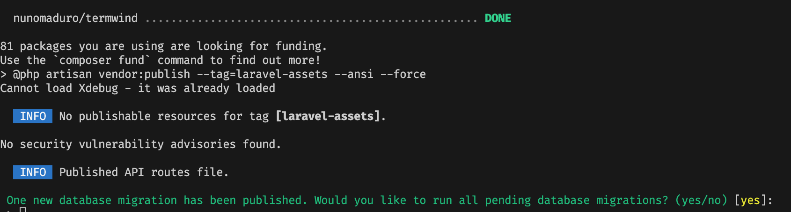
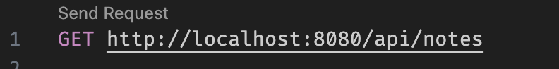
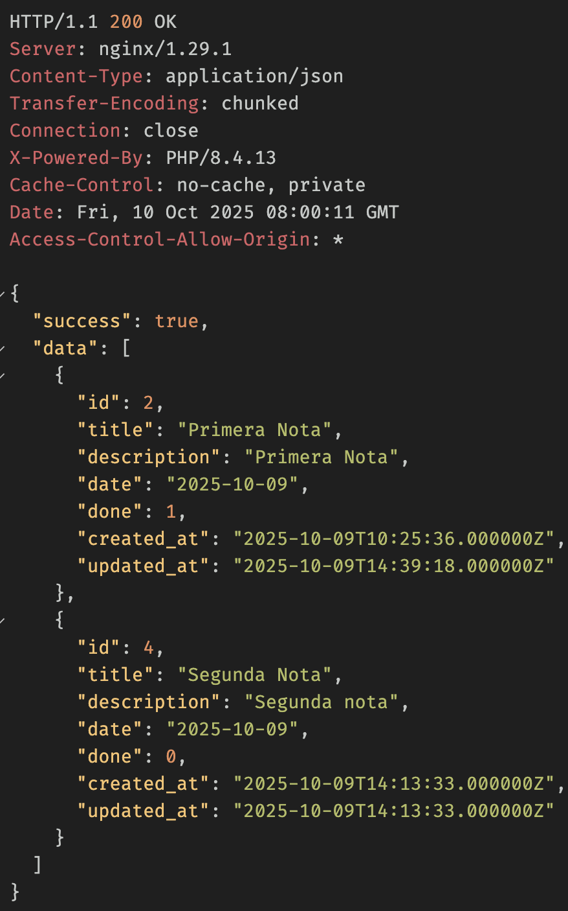
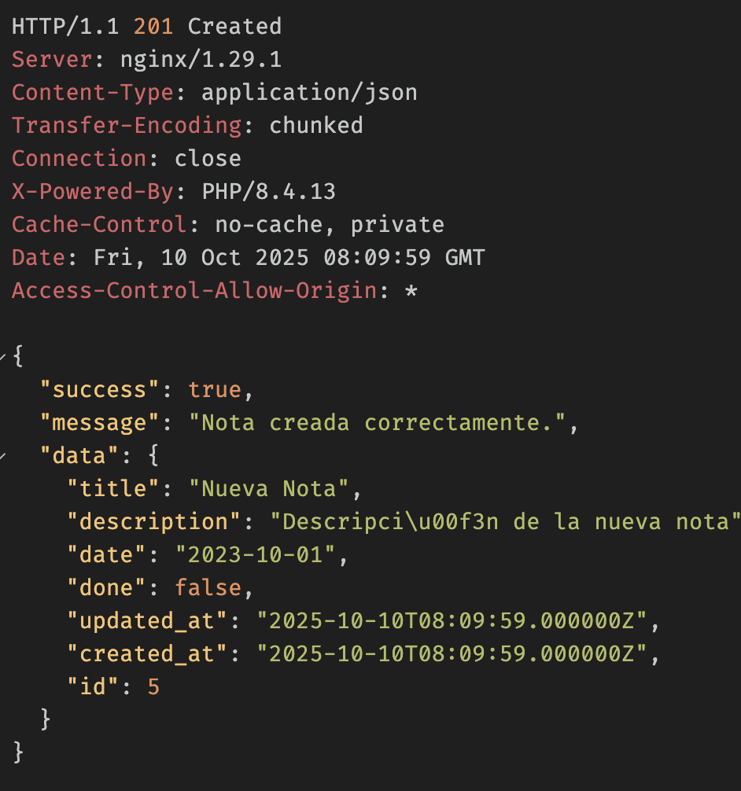
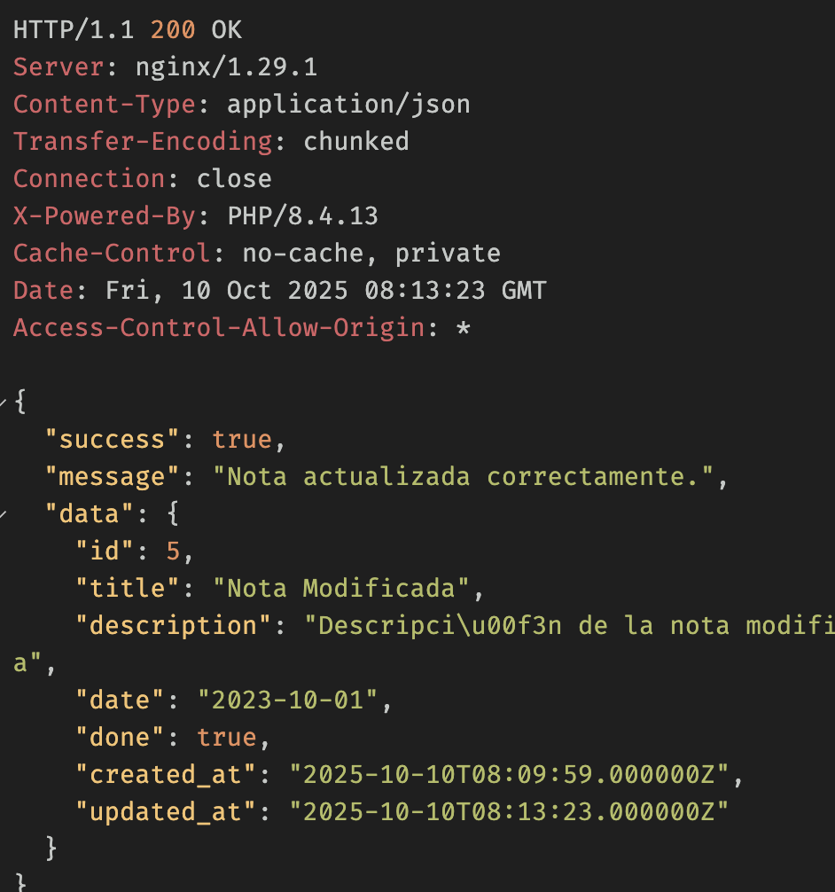
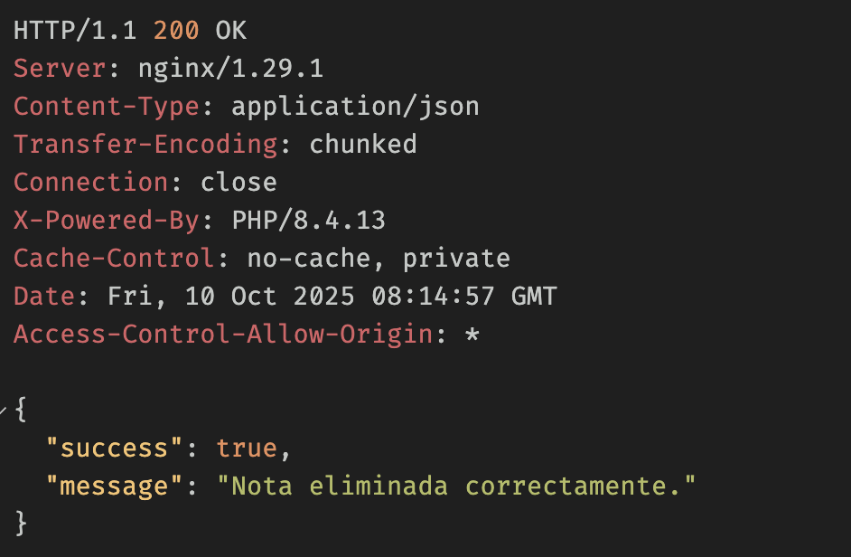
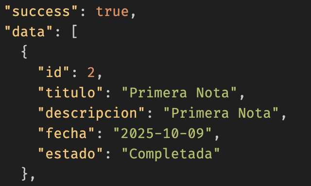
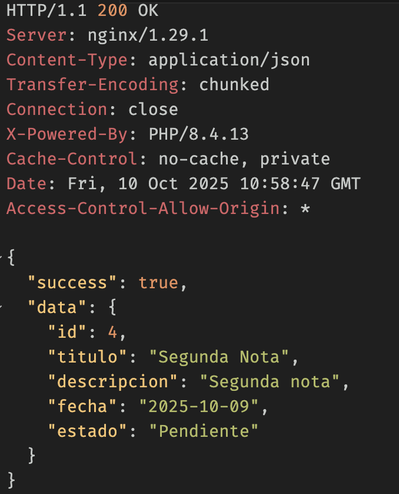

Creación de APIs REST en Laravel¶
Autoría de este tema
El contenido de este tema (las lecciones, la actividad y los anexos) es obra de Javier Beteta, del curso Introducción a Laravel. Adaptado para 2º DAW del IES Juan de Garay por Eva María Gómez Abad.
Rutas API¶
En Laravel 12, a diferencia de versiones anteriores, el archivo routes/api.php no viene incluido por defecto. Laravel ahora permite habilitarlo opcionalmente para mantener la aplicación más ligera si no vas a construir una API.
Activar el sistema de rutas API¶
Para trabajar con rutas API, primero debemos ejecutar el siguiente comando Artisan:
Este comando:
- Crea automáticamente el archivo
routes/api.php. - Registra el archivo en el sistema de rutas.
- Aplica el middleware
apia las rutas definidas allí. - Añade el prefijo
/apia todas las rutas de ese archivo.
En el proceso nos pude pedir crear una nueva migración para la tabla api_tokens, podemos decir que sí aunque de momento no la vamos a utilizar ya que no hemos visto la autenticación.
Confirmación de creación de migración


¿Dónde se registra esta configuración?¶
Laravel configura los archivos de rutas en bootstrap/app.php. Una vez activadas, podrás ver una línea como esta:
Registro de rutas API con prefijo
parámetro apiPrefix
Laravel no añade este prefijo automáticamente, pero su valor por defecto es api. Por tanto añadir esta línea o no es equivalente. Pero yo recomiendo ponerla explícitamente para tener claro que las rutas de api.php van con el prefijo /api.
Si quieres cambiar el prefijo, por ejemplo a api/admin, puedes modificar la clave apiPrefix:
Personalizar prefijo de rutas API
A partir de este momento, cualquier ruta definida en routes/api.php responderá a URLs que empiecen por /api/ (o el prefijo que hayas definido).
Importante
El archivo web.php sigue existiendo por defecto y está pensado para rutas que devuelven vistas HTML. Por tanto, recuerda usar api.php exclusivamente para tu API REST.
Laravel carga cada archivo de rutas con su configuración correspondiente desde bootstrap/app.php:
routes/web.php-> grupo de middlewarewebroutes/api.php-> grupo de middlewareapiy prefijo/api
Introducción¶
Una API (Application Programming Interface) permite a aplicaciones diferentes comunicarse entre sí, intercambiando datos en formatos como JSON. Las APIs REST usan los verbos HTTP (GET, POST, PUT, DELETE) para definir operaciones sobre recursos.
Laravel ofrece todas las herramientas necesarias para construir APIs modernas, organizadas y seguras. En este tema construiremos paso a paso una API para el recurso Note, que ya conocemos de los temas anteriores.
Definir Rutas de API¶
Ficheros de rutas y su organización¶
Laravel separa las rutas para aplicación web y API:
| Archivo | Propósito |
|---|---|
routes/web.php |
Rutas para la interfaz web HTML |
routes/api.php |
Rutas para la API, normalmente consumidas por clientes que esperan JSON |
Estas rutas se cargan mediante la configuración definida en bootstrap/app.php.
Cuando activamos el soporte para API con php artisan install:api, Laravel registra el archivo routes/api.php, le aplica el prefijo /api y asocia estas rutas al grupo de middleware api.
Este grupo está pensado para rutas stateless (sin sesión ni CSRF) y permite, entre otras cosas, la resolución automática de parámetros de ruta a modelos mediante SubstituteBindings.
Por defecto, este grupo incluye la resolución de route model binding mediante SubstituteBindings. Si además queremos limitación de peticiones (throttle) u otros middlewares, podemos añadirlos explícitamente en la configuración de middleware o en las rutas.
Ejemplo del prefijo automático
<?php
Route::get('/notes', function () {
return ['mensaje' => 'Esta es la API de notas'];
});
Accediendo a http://localhost:8000/api/notes, obtendrás: { "mensaje": "Esta es la API de notas" }
Hay que fijarse que no es necesario añadir /api en la ruta, Laravel lo añade automáticamente. Pero sí hay que ponerlo en las peticiones.
Middleware aplicado a las rutas API¶
Las rutas definidas en routes/api.php quedan asociadas automáticamente al grupo de middleware api.
En la estructura moderna de Laravel, este grupo se configura en bootstrap/app.php.
Por ejemplo, si definimos una ruta como:
y en el controlador usamos:
<?php
public function show(Note $note): JsonResponse
{
return response()->json([
'success' => true,
'data' => $note
], 200);
}
Route Model Binding
Este comportamiento se basa en el route model binding de Laravel, que permite convertir automáticamente los parámetros de la URL en modelos de Eloquent.
Laravel intentará buscar automáticamente la nota por su identificador. Si no existe, devolverá un error 404.
Si queremos añadir limitación de peticiones (throttle) al grupo api, podemos hacerlo explícitamente en la configuración de middleware o en rutas concretas.
Control de errores en la API¶
En una API REST es importante devolver siempre respuestas en formato JSON, también cuando ocurre un error.
Uso de route model binding¶
Cuando usamos parámetros tipados en el controlador:
Laravel resuelve automáticamente el modelo. Si no existe, devuelve un error 404 Not Found.
Este mismo comportamiento se aplica en métodos como update() y destroy():
<?php
public function update(NoteRequest $request, Note $note): JsonResponse
{
$note->update($request->validated());
return response()->json([
'success' => true,
'message' => 'Nota actualizada correctamente.',
'data' => $note
], 200);
}
public function destroy(Note $note): JsonResponse
{
$note->delete();
return response()->json([
'success' => true,
'message' => 'Nota eliminada correctamente.'
], 200);
}
Uso alternativo con findOrFail¶
También podemos usar:
Si no existe, Laravel lanza una excepción y devuelve un 404.
Asegurar respuestas JSON en errores¶
En clientes como REST Client, Postman o frontend, es recomendable enviar:
Además, podemos forzar que todas las rutas de la API devuelvan JSON configurando bootstrap/app.php:
<?php
->withExceptions(function (Exceptions $exceptions): void {
$exceptions->shouldRenderJsonWhen(function (Request $request, Throwable $e) {
return $request->is('api/*') || $request->expectsJson();
});
})
Conclusión¶
- Usar route model binding es la opción más limpia.
- Laravel devuelve automáticamente 404 si el recurso no existe.
- No es necesario usar
try-catchen cada método. - La mejor práctica es centralizar el formato JSON de errores.
Crear Controlador para la API¶
Antes de generar el controlador, debemos asegurarnos de que existe la tabla notes en nuestra base de datos.En caso de no tenerla, podemos crearla con el siguiente comando:
Esto generará un archivo de migración en database/migrations que podemos editar para definir la estructura de la tabla notes.
Asegúrate de que la migración tenga el siguiente contenido:
Migración para la tabla notes
<?php
use Illuminate\Database\Migrations\Migration;
use Illuminate\Database\Schema\Blueprint;
use Illuminate\Support\Facades\Schema;
class CreateNotesTable extends Migration
{
public function up()
{
Schema::create('notes', function (Blueprint $table) {
$table->id();
$table->string('title');
$table->text('description');
$table->date('date');
$table->boolean('done')->default(false);
$table->timestamps();
});
}
public function down()
{
Schema::dropIfExists('notes');
}
}
Después de editar la migración, ejecuta el siguiente comando para crear la tabla:
Esto creará la tabla notes en tu base de datos.
También podemos crear el modelo Note con el siguiente comando:
Esto generará el modelo Note en app/Models/Note.php.
Generar un controlador API¶
Usamos el flag --api para generar un controlador que sólo incluye los métodos necesarios para una API CRUD:
Esto creará el archivo en app/Http/Controllers/Api/NoteController.php con los métodos: index, store, show, update, destroy.
Controlador NoteController
<?php
namespace App\Http\Controllers\Api;
use App\Http\Controllers\Controller;
use App\Models\Note;
use Illuminate\Http\JsonResponse;
use Illuminate\Http\Request;
class NoteController extends Controller
{
public function index(): JsonResponse
{
// Listar todas las notas
}
public function show(Note $note): JsonResponse
{
// Mostrar una nota por ID
}
public function store(Request $request): JsonResponse
{
// Crear una nueva nota
}
public function update(Request $request, Note $note): JsonResponse
{
// Actualizar una nota existente
}
public function destroy(Note $note): JsonResponse
{
// Eliminar una nota
}
}
El controlador NoteController extiende de Controller y usa el modelo Note para interactuar con la base de datos.
Crear las rutas API para Notes¶
En routes/api.php:
Ruta resource para Notes
Por seguridad, podemos utilizar only() para definir las rutas que queremos habilitar:
<?php
Route::apiResource('notes', NoteController::class)->only([
'index', 'show', 'store', 'update', 'destroy'
]);
Esto generará automáticamente las rutas necesarias para el controlador NoteController usando el método apiResource. Laravel se encarga de crear las rutas RESTful para los métodos del controlador.
Esto define rutas como:
- GET
/api/notes - GET
/api/notes/{note} - POST
/api/notes - PUT/PATCH
/api/notes/{note} - DELETE
/api/notes/{note}
Puedes comprobarlas con:
Resultado de route:list

Implementar el CRUD API para Notes¶
Modelo Note¶
Asegúrate de que el modelo Note está correctamente definido con $fillable:
Modelo Note con fillable
Códigos de Estado HTTP en APIs¶
En una API REST, es importante devolver códigos de estado HTTP apropiados para indicar si la operación fue exitosa o si ocurrió un error.
A continuación, una tabla con los códigos más comunes y su uso recomendado:
| Código | Nombre | Cuándo se usa |
|---|---|---|
200 OK |
Éxito | La petición fue exitosa (por ejemplo, GET, PUT, DELETE) |
201 Created |
Recurso creado | Se ha creado un nuevo recurso correctamente (por ejemplo, POST) |
204 No Content |
Sin contenido | La petición fue exitosa pero no se devuelve ningún contenido (opcional tras DELETE) |
400 Bad Request |
Petición incorrecta | Cuando el cliente envía datos inválidos |
401 Unauthorized |
No autorizado | Cuando el usuario no está autenticado |
403 Forbidden |
Prohibido | El usuario está autenticado pero no tiene permisos |
404 Not Found |
No encontrado | El recurso solicitado no existe |
422 Unprocessable Entity |
Entidad no procesable | Validaciones fallidas en los datos enviados |
500 Internal Server Error |
Error del servidor | Error inesperado en el servidor |
¿Por qué usamos 200, 201 y 204 en este tema?
- Usamos 200 OK en respuestas normales donde devolvemos datos (GET, PUT, DELETE).
- Usamos 201 Created al crear un recurso con POST para indicar que se creó exitosamente.
- Usaríamos 204 No Content si quisiéramos responder a un DELETE sin mensaje (aunque aquí devolvemos mensaje con 200).
Implementar métodos del controlador¶
Antes de implementar los métodos del controlador, asegúrate de importar las clases necesarias:
Importar clases en NoteController
Método index() – Listar notas¶
Listar todas las notas
Método show() – Mostrar una nota¶
Mostrar una nota por ID
Método store() – Crear una nota¶
Guardar nueva nota
Método update() – Modificar nota¶
Actualizar una nota
Método destroy() – Eliminar nota¶
Eliminar una nota
Testing de la API¶
Para probar la API vamos a usar una extensión de Code llamada REST Client que permite hacer peticiones HTTP directamente desde el editor. También puedes usar herramientas como Postman o Insomnia.
Para ello vamos a crear un archivo notes.rest en la raíz del proyecto por ejemplo.
Vamos a escribir nuestra primera petición para listar todas las notas:
Petición GET

Para lanzar la petición, sitúate en la línea GET ... y pulsa el botón Send Request que aparece encima.
Debes obtener una respuesta como esta:
Respuesta GET

En este caso teníamos dos notas creadas previamente, de un tema anterior.
Vamos a crear una nueva nota con el método POST:
Crear nueva nota
Debemos recibir una respuesta como esta:
Respuesta POST

En este código hay que observar varias cosas:
- La URL de la petición es
http://localhost:8080/api/notes, que es la ruta que hemos definido en nuestro archivo de rutas. - El método HTTP utilizado es
POST, lo que indica que estamos creando un nuevo recurso. - Hemos especificado la cabecera
content-type: application/jsonpara indicar que el cuerpo de la petición es un JSON. - En el cuerpo de la petición, estamos enviando un objeto JSON con los datos de la nueva nota que queremos crear.
- Hemos dejado una línea en blanco entre las cabeceras y el cuerpo de la petición, que es obligatorio en HTTP.
Ahora vamos a modificar la nota creada anteriormente con el método PUT. Pero antes necesitamos su ID, para ello repetimos la petición GET para listar todas las notas y ver el ID de la nota que acabamos de crear. En mi caso es la nota con ID 5.
Modificar nota con ID 5
La estructura es similar a la petición POST, pero en este caso el método es PUT y la URL incluye el ID de la nota que queremos modificar.
Debemos recibir una respuesta como esta:
Respuesta PUT

Finalmente vamos a eliminar la nota con ID 5 usando el método DELETE:
La petición es muy sencilla, sólo necesitamos el método DELETE y la URL con el ID de la nota que queremos eliminar.
Debemos recibir una respuesta como esta:
Respuesta DELETE

Con esto hemos probado todas las operaciones CRUD de nuestra API REST para el recurso Note. En el siguiente apartado vamos a ver cómo mejorar la salida de los datos usando API Resources, podemos tomar el control del formato de los datos que devolvemos.
API Resources¶
Laravel permite transformar la salida de tus APIs con clases Resource que te dan control sobre el formato.
Crear un API Resource¶
Crea el archivo en App\Http\Resources\NoteResource.php
Personalizar la transformación¶
Vamos a modificar la salida de los datos en NoteResource.php. Por ejemplo, podemos cambiar los nombres de los campos y añadir un campo calculado estado que indique si la nota está completada o pendiente:
Ejemplo de transformación en NoteResource
Usar el recurso en el controlador¶
Añadimos la importación al controlador NoteController:
Modificamos el método index() para devolver una colección de NoteResource:
Devolver colección con estado y mensaje
De esta manera, la respuesta incluirá el estado y el mensaje de éxito. Vamos a comprobarlo con una petición GET a /api/notes:
Respuesta GET con NoteResource

En los demás métodos no devolvemos una colección sino un solo elemento. Por ello por ejemplo para el método show() podemos hacer lo siguiente:
Devolver una sola nota con NoteResource
Respuesta GET /api/notes/{id} con NoteResource

Ahora sería aplicable a todos los métodos que devuelven un solo elemento, como store()y update(). Al destroy() no puesto que no devuelve los datos de la nota eliminada.
Validación de los datos¶
Al igual que en los formularios, es importante validar los datos que recibimos en la API. Laravel ofrece un sistema de validación muy potente. Empezaremos por validar los datos en el método store() y update(). Para ello vamos a crear la clase NoteRequest:
Eliminar NoteRequest
En el tema anterior creamos la clase NoteRequest para validar los datos del formulario. Si la tienes creada, elimínala para evitar conflictos.
Esto generará el archivo en app/Http/Requests/NoteRequest.php.
Clase NoteRequest
<?php
namespace App\Http\Requests;
use Illuminate\Foundation\Http\FormRequest;
use Illuminate\Contracts\Validation\Validator;
use Illuminate\Http\Exceptions\HttpResponseException;
use Illuminate\Validation\ValidationException;
class NoteRequest extends FormRequest
{
public function authorize(): bool
{
return true;
}
public function rules(): array
{
return [
'title' => 'required|string|max:255',
'description' => 'required|string',
'date' => 'required|date',
'done' => 'boolean'
];
}
}
esta función al igual que en los formularios, define las reglas de validación. En este caso:
title: requerido, cadena de texto, máximo 255 caracteres.description: requerido, cadena de texto.date: requerido, debe ser una fecha válida.done: booleano (opcional).
En caso de error en la validación, Laravel devolverá automáticamente un error 422 con los detalles del error.
Ejemplo de error de validación
Podemos personalizar la respuesta de error en el método failedValidation() en la clase NoteRequest:
Debemos añadir las importaciones necesarias al principio del archivo:
Importar clases en NoteRequest
Personalizar la respuesta de error
parámetros JSON
En los parámetros de json() podemos añadir el tercer parámetro JSON_UNESCAPED_UNICODE para evitar que los caracteres especiales se escapen. Esto es útil si estás trabajando con caracteres no ASCII. Sino los acentos y caracteres especiales se escaparán y no se verán correctamente en la respuesta.
Ahora para que las validaciones funcionen debemos ajustar los métodos store() y update() del controlador para usar NoteRequest en lugar de Request:
Usar NoteRequest en NoteController
<?php
public function store(NoteRequest $request): JsonResponse
{
$note = Note::create($request->validated());
return response()->json([
'success' => true,
'message' => 'Nota creada correctamente.',
'data' => new NoteResource($note)
], 201);
}
public function update(NoteRequest $request, Note $note): JsonResponse
{
$note->update($request->validated());
return response()->json([
'success' => true,
'message' => 'Nota actualizada correctamente.',
'data' => new NoteResource($note)
], 200);
}
Se puede observar en los dos métodos que hemos cambiado $request->all() por $request->validated(). Esto asegura que sólo los datos que pasaron la validación se usan para crear o actualizar la nota.
Por ejemplo, imaginemos que tenemos la siguiente validación, una clase que solo admite los campos name y email:
<?php
class StoreUserRequest extends FormRequest
{
public function rules()
{
return [
'name' => ['required', 'string'],
'email' => ['required', 'email'],
];
}
}
Ahora el cliente envía el siguiente JSON:
El campo role no está definido en las reglas de validación, por lo que será ignorado cuando usemos $request->validated(). Esto ayuda a prevenir la asignación masiva de campos no deseados.
En resumen:
$request->validated();
// => ['name' => 'John Doe', 'email' => 'john.doe@example.com']
$request->all();
// => ['name' => 'John Doe', 'email' => 'john.doe@example.com', 'role' => 'admin']
Recordemos que si role no está en $fillable en el modelo, no se asignará de todas formas. Pero es una buena práctica usar validated() para asegurarnos de que sólo los datos permitidos se procesan.
Ejemplos de peticiones¶
Si todo ha ido bien aquí tenemos una API REST completa para el recurso Note que podemos probar con herramientas como Postman o RestClient:
Ejemplo uso de apicon API RestClient
Conclusiones¶
- Las APIs REST son ideales para aplicaciones SPA, móviles o integraciones.
- Laravel permite definir rutas específicas para API con prefijos automáticos y middleware personalizado.
- Los controladores API están enfocados a respuestas JSON.
ApiResourcepermite estructurar y controlar la salida de tus datos.